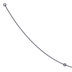

findpath
findpath(list, curvature=1.0)
Constructs a fluid path from a list of coordinates. Each element in the list is a 2-tuple defining the x-coordinate and the y-coordinate. If the curve has more than three points, the curvature parameter offers some control on how separate segments are stitched together: from straight lines (0.0) to smooth curves (1.0).
 |
points = [
(100, 100),
(200, 200),
(350, 200)]
for x, y in points:
oval(x-2, y-2, 4, 4)
autoclosepath(False)
path = findpath(points)
drawpath(path) |